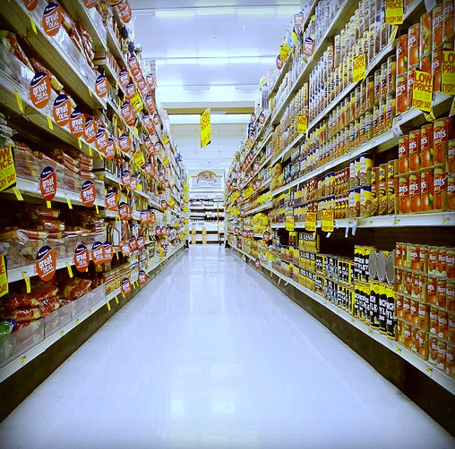

Genetically Modified Food: Risks vs. Benefits

The genetically modified (GM) food controversy is a dispute over the advantages of modifying food crops genetically and using other biotechnology. GM foods have the potential to create more resistant crops and feed the millions of hungry mouths on our planet. But is it worth it? How much do we really know about the practical use of GM foods? Safety and health have the potential to be compromised. Many people have moral and ethical objections and fear the outcome when food is controlled by corporate companies. This plenary will explore the controversy between the risks and benefits. Which side will you be on?
—Anisah Mahomed, Joey Linzon, & Jonathan Rodriguez
A genetically modified organism (GMO) or genetically engineered organism (GEO) is an organism whose genetic material has been altered using genetic engineering techniques (Wikipedia). The change to the organism’s genome may be a deletion, rearrangement, or addition. In the case of an addition it is a transgenic organism. An example is the herbicide resistant transgenic crop Roundup Ready corn sold by Monsanto. A recently develop GM corn is SmartStax that has multiple insect resistant traits and several herbicide resistance traits designed to reduce the development of resistance by insect pests and further improve resistance to herbicides. These traits are designed to improve yield and enable better control of noxious weeds. In addition to these GM cereals there is a new generation of GM crops under development with nutritional and other value added traits (Newell-McGloughlin 2008).
At the present there is a GM goat approved for the production of ATryn in the milk. ATryn is an anticoagulant used for the prevention of blood clots in patients with a rare disease known as hereditary antithrombin deficiency, but no GM food animals have been approved for human consumption. However, fast growing transgenic salmon are in the final stage of regulatory approval by the Food and Drug Administration in the USA, and other transgenic food animals with various beneficial traits are under development (Gottlieb and Wheeler 2008) including the Enviropig™ developed at the University of Guelph. In the presentation I will briefly describe the methods for development of genetically modified animals, elaborate on the plant and animal traits in the research and development pipeline, and describe the benefits they offer to society.
—Cecil Forsberg, Professor (Department of Molecular and Cellular Biology — University of Guelph)
—Anisah Mahomed, Joey Linzon, & Jonathan Rodriguez
A genetically modified organism (GMO) or genetically engineered organism (GEO) is an organism whose genetic material has been altered using genetic engineering techniques (Wikipedia). The change to the organism’s genome may be a deletion, rearrangement, or addition. In the case of an addition it is a transgenic organism. An example is the herbicide resistant transgenic crop Roundup Ready corn sold by Monsanto. A recently develop GM corn is SmartStax that has multiple insect resistant traits and several herbicide resistance traits designed to reduce the development of resistance by insect pests and further improve resistance to herbicides. These traits are designed to improve yield and enable better control of noxious weeds. In addition to these GM cereals there is a new generation of GM crops under development with nutritional and other value added traits (Newell-McGloughlin 2008).
At the present there is a GM goat approved for the production of ATryn in the milk. ATryn is an anticoagulant used for the prevention of blood clots in patients with a rare disease known as hereditary antithrombin deficiency, but no GM food animals have been approved for human consumption. However, fast growing transgenic salmon are in the final stage of regulatory approval by the Food and Drug Administration in the USA, and other transgenic food animals with various beneficial traits are under development (Gottlieb and Wheeler 2008) including the Enviropig™ developed at the University of Guelph. In the presentation I will briefly describe the methods for development of genetically modified animals, elaborate on the plant and animal traits in the research and development pipeline, and describe the benefits they offer to society.
—Cecil Forsberg, Professor (Department of Molecular and Cellular Biology — University of Guelph)